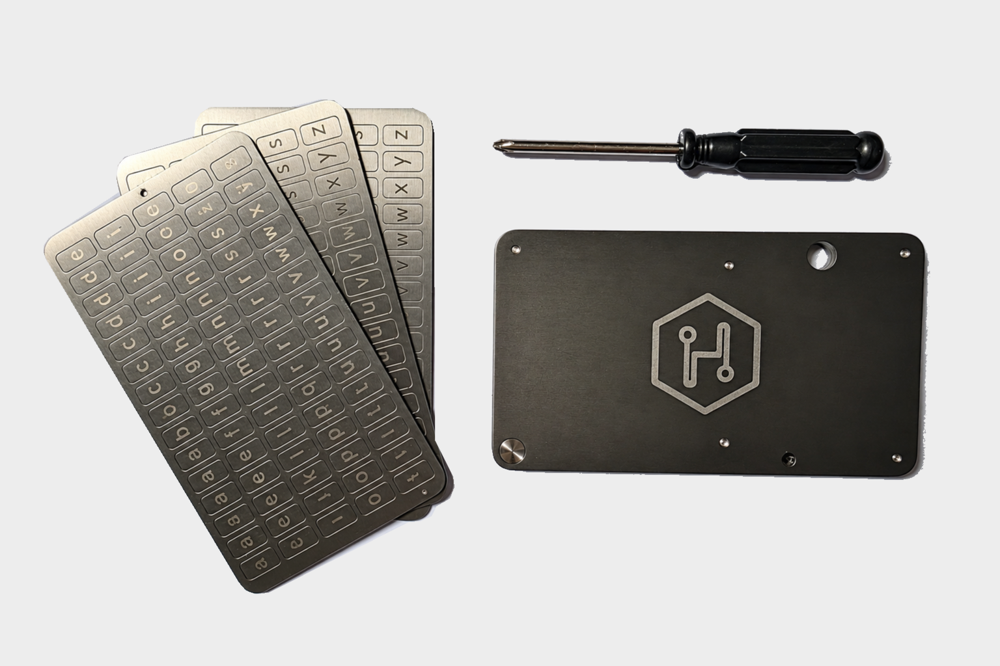

Deine Seed Phrase verdient mehr als Papier.
Eine Recovery-Phrase ist eine geordnete Folge von Wörtern, mit der du den Zugang zu einer kompatiblen Wallet wiederherstellen kannst. Sie ist keine gewöhnliche Notiz: Wer diese Wörter kennt, kann unter Umständen auf deine digitalen Vermögenswerte zugreifen. Ihre Aufbewahrung gehört deshalb genauso zur Self-Custody wie der sichere Umgang mit der Wallet selbst.
Die HODLWARE Steel Seed Phrase Recovery Plate hält deine Wiederherstellungsinformationen physisch fest. Du setzt Metallbuchstaben in die vorgesehenen Positionen ein und verschließt die Platte anschließend mechanisch. Für die Aufbewahrung braucht sie weder einen Account noch eine Batterie, Software oder eine Internetverbindung. Das Backup bleibt an dem Ort, den du selbst auswählst.
Die Platte ersetzt keine Wallet und verwahrt keine Coins. Sie dient dazu, deine Recovery-Wörter unabhängig von digitalen Speichermedien abzulegen. Ob und wie eine Wiederherstellung funktioniert, richtet sich weiterhin nach dem Standard und den Vorgaben deiner Wallet.
Was bedeutet 4-Digit?
4-Digit steht hier für die ersten vier Buchstaben pro Wort. Innerhalb der standardisierten englischen BIP39-Wortliste reichen diese aus, um ein Wort eindeutig zu identifizieren. Ein kürzeres Wort wird vollständig übernommen. Deshalb musst du bei dieser Wortliste nicht jedes Wort vollständig auf der Platte ablegen.
Diese Eigenschaft gilt ausdrücklich für die englische BIP39-Wortliste. Sie ist keine allgemeine Zusage für andere Sprachen, beliebige Wörter oder jede Wallet. Prüfe vor dem Einrichten, ob deine Recovery-Phrase diesem Standard entspricht und aus 12 oder 24 Wörtern besteht. Die richtige Reihenfolge ist ebenso wichtig wie die korrekten Buchstaben.
So richtest du dein physisches Backup ein
- Vorbereiten: Lies die beiliegende BIP39-Anleitung und die Wiederherstellungshinweise deiner Wallet. Arbeite an einem ruhigen, geschützten Ort, an dem niemand deine Wörter mitlesen oder aufnehmen kann.
- Wörter zuordnen: Übertrage die ersten vier Buchstaben jedes englischen BIP39-Wortes an die passende nummerierte Position. Kürzere Wörter bleiben vollständig. Bewahre die ursprüngliche Reihenfolge exakt.
- Buchstaben einsetzen: Lege die benötigten Metallbuchstaben in die vorgesehenen Aufnahmen ein. Prüfe jede Position sorgfältig, bevor du die nächste bearbeitest. Für das Einrichten ist keine Online-Eingabe deiner Recovery-Phrase erforderlich.
- Kontrollieren und schließen: Vergleiche die Buchstaben und ihre Reihenfolge nochmals mit deiner eigenen Recovery-Phrase. Die Verschlusselemente werden eingeschoben und verschraubt; verwende dafür den mitgelieferten Schraubendreher und die Anleitung.
- Geschützt aufbewahren: Wähle einen diskreten Ort, der vor unbefugtem Zugriff geschützt ist und den du für eine Wiederherstellung wiederfindest. Die sichere Lagerung bleibt auch nach dem Verschließen entscheidend.
Übe einen Ablauf nur mit fiktiven Beispielen. Nutze die vorgesehenen Prüfverfahren deiner Wallet, um die Wiederherstellbarkeit zu kontrollieren, ohne deine echte Recovery-Phrase auf einer Website einzugeben.
Mechanisch aufgebaut. Für Offline-Aufbewahrung gedacht.
- Edelstahl 304 / V2A – Metall statt eines handschriftlichen Papierbackups.
- Mechanische Speicherung – eingesetzte Buchstaben dokumentieren deine Wörter physisch.
- 12 oder 24 Wörter – nummerierte Positionen helfen bei der geordneten Übertragung.
- Vier Buchstaben pro Wort – auf die englische BIP39-Wortliste abgestimmt.
- Verschraubbarer Aufbau – eingeschobene und verschraubte Verschlusselemente.
- Kompaktes Format – 10,5 × 6 × 0,6 cm bei einem Gewicht von 217 g.
- Offline – ohne Stromversorgung, Cloud oder laufende Software.
Material und mechanischer Aufbau entbinden nicht von einer sorgfältigen Lagerung. Aus diesen Angaben leiten wir keine garantierte Feuer-, Wasser- oder Zerstörungsresistenz ab.
Technische Daten
- Produkt
- Steel Seed Phrase Recovery Plate
- Variante
- 4-Digit
- Material
- Edelstahl 304 / V2A
- Maße
- 10,5 × 6 × 0,6 cm
- Gewicht
- 217 g
- Kapazität
- 12 oder 24 Wörter
- Zeichen pro Wort
- Die ersten 4 Buchstaben
- Standard
- Englische BIP39-Wortliste
- Verschluss
- Eingeschoben und verschraubt
Dein Lieferumfang

- 1× Edelstahl-Recovery-Platte
- Metallbuchstaben
- 1× Schraubendreher
- 3× VOID-Sticker
- 1× BIP39-Anleitung
Die Anleitung begleitet dich bei der Einrichtung. Die VOID-Sticker können als sichtbarer Manipulationsindikator verwendet werden. Sie verschlüsseln die gespeicherten Wörter nicht und ersetzen keinen geschützten Aufbewahrungsort.
Deine Recovery-Phrase bleibt privat
- Gib deine Recovery-Phrase niemals digital weiter. Fotografiere sie nicht, lade sie nicht hoch und sende sie weder an einen Support noch an HODLWARE.
- Verwende in Tutorials, Produktbildern und Demonstrationen ausschließlich fiktive Beispielwörter, niemals eine echte Recovery-Phrase.
- Schütze die Platte vor unbefugtem Zugriff. Wer die Informationen lesen kann, kann möglicherweise deine Wallet wiederherstellen.
- Prüfe vor der Übertragung den Standard deiner Wallet und kontrolliere danach alle Buchstaben sowie deren Reihenfolge.
- Behandle VOID-Sticker als Manipulationsindikatoren, nicht als vollständigen Zugriffsschutz oder Garantie gegen unbemerkten Zugriff.
Ein physisches Backup verlagert die Aufbewahrung in deine Verantwortung. Wähle den Lagerort bewusst und plane, wie du selbst im Bedarfsfall sicher darauf zugreifen kannst.
Häufige Fragen zur 4-Digit-Plate
Warum reichen vier Buchstaben bei BIP39?
Die Wörter der englischen BIP39-Wortliste lassen sich anhand ihrer ersten vier Buchstaben eindeutig unterscheiden. Kürzere Wörter werden vollständig notiert. Diese Aussage gilt für diese konkrete Wortliste, nicht pauschal für andere Sprachen oder Wallet-Standards.
Kann ich 12 und 24 Wörter speichern?
Ja. Die 4-Digit-Plate ist für Recovery-Phrases mit 12 oder 24 Wörtern ausgelegt. Übertrage die Wörter in ihrer ursprünglichen Reihenfolge. Für eine Phrase mit 18 Wörtern bietet HODLWARE die 8-Digit-Variante an.
Was ist der Unterschied zur 8-Digit-Platte?
Die 4-Digit-Plate speichert die ersten vier Buchstaben je Wort der englischen BIP39-Liste. Die 8-Digit-Variante bietet bis zu acht Zeichen und unterstützt 12, 18 oder 24 Wörter. Vergleiche außerdem den Lieferumfang der jeweiligen Variante; mehr Zeichen bedeuten nicht automatisch mehr Sicherheit.
Benötigt die Platte Strom oder Internet?
Nein. Die Buchstaben werden mechanisch eingesetzt und physisch aufbewahrt. Die Platte selbst hat keine Elektronik. Für eine spätere Wiederherstellung verwendest du die dafür vorgesehenen Funktionen deiner kompatiblen Wallet.
Was passiert, wenn jemand die Platte findet?
Die gespeicherten Informationen sind nicht verschlüsselt. Kann eine andere Person sie lesen, besteht das Risiko eines Zugriffs auf deine digitalen Vermögenswerte. Die Platte sollte deshalb diskret und vor unbefugtem Zugriff geschützt aufbewahrt werden.
Wie funktionieren die VOID-Sticker?
Die mitgelieferten Sticker dienen dazu, einen Manipulationshinweis sichtbar zu machen. Sie verhindern keinen Zugriff auf die Platte und gewährleisten nicht, dass jeder Zugriffsversuch erkannt wird. Verwende sie ergänzend zu einem geschützten Lagerort.
Deine Keys. Dein Backup. Deine Kontrolle.
Bewahre deine Recovery-Phrase bewusst auf: physisch, offline und an einem Ort, den du bestimmst.
BUILT TO LAST.